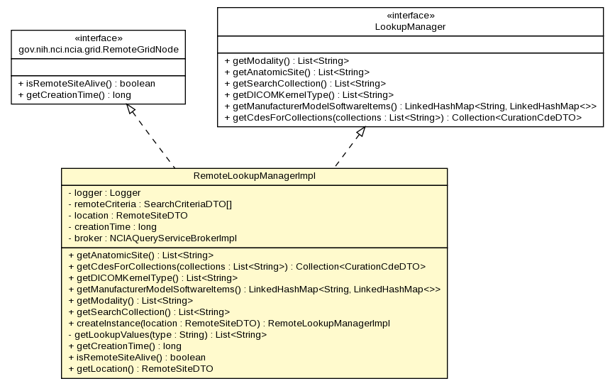

gov.nih.nci.ncia.lookup
Class RemoteLookupManagerImpl

java.lang.Object
 gov.nih.nci.ncia.lookup.RemoteLookupManagerImpl
gov.nih.nci.ncia.lookup.RemoteLookupManagerImpl
- All Implemented Interfaces:
- RemoteGridNode, LookupManager
public class RemoteLookupManagerImpl
- extends java.lang.Object
- implements LookupManager, RemoteGridNode
This will provide a connection to a specific grid location. It will return
all of the search criteria back to the CompositeLookupManager for it to
return back to the user.
| Methods inherited from class java.lang.Object |
clone, equals, finalize, getClass, hashCode, notify, notifyAll, toString, wait, wait, wait |
logger
private static org.apache.log4j.Logger logger
remoteCriteria
private gov.nih.nci.ncia.dto.SearchCriteriaDTO[] remoteCriteria
location
private RemoteSiteDTO location
creationTime
private long creationTime
broker
private NCIAQueryServiceBrokerImpl broker
RemoteLookupManagerImpl
private RemoteLookupManagerImpl(RemoteSiteDTO location)
throws org.apache.axis.types.URI.MalformedURIException,
java.rmi.RemoteException
- Throws:
org.apache.axis.types.URI.MalformedURIException
java.rmi.RemoteException
getAnatomicSite
public java.util.List<java.lang.String> getAnatomicSite()
throws java.lang.Exception
- Specified by:
getAnatomicSite in interface LookupManager
- Throws:
java.lang.Exception
getCdesForCollections
public java.util.Collection<CurationCdeDTO> getCdesForCollections(java.util.List<java.lang.String> collections)
throws java.lang.Exception
- Loads data for curation data search based on a list of collections
- Specified by:
getCdesForCollections in interface LookupManager
- Parameters:
collections - -
list of collection IDs to retrieve CDEs for
- Throws:
java.lang.Exception- See Also:
LookupManager.getCdesForCollections(java.util.List)
getDICOMKernelType
public java.util.List<java.lang.String> getDICOMKernelType()
throws java.lang.Exception
- Specified by:
getDICOMKernelType in interface LookupManager
- Throws:
java.lang.Exception
getManufacturerModelSoftwareItems
public java.util.LinkedHashMap<java.lang.String,java.util.LinkedHashMap> getManufacturerModelSoftwareItems()
throws java.lang.Exception
- Specified by:
getManufacturerModelSoftwareItems in interface LookupManager
- Throws:
java.lang.Exception
getModality
public java.util.List<java.lang.String> getModality()
throws java.lang.Exception
- Specified by:
getModality in interface LookupManager
- Returns:
-
- Throws:
java.lang.Exception
getSearchCollection
public java.util.List<java.lang.String> getSearchCollection()
throws java.lang.Exception
- Specified by:
getSearchCollection in interface LookupManager
- Throws:
java.lang.Exception
createInstance
public static RemoteLookupManagerImpl createInstance(RemoteSiteDTO location)
throws org.apache.axis.types.URI.MalformedURIException,
java.rmi.RemoteException
- Throws:
org.apache.axis.types.URI.MalformedURIException
java.rmi.RemoteException
getLookupValues
private java.util.List<java.lang.String> getLookupValues(java.lang.String type)
- Retuns the list of strings as lookup values for the passed in type
- Parameters:
type -
- Returns:
getCreationTime
public long getCreationTime()
- Specified by:
getCreationTime in interface RemoteGridNode
isRemoteSiteAlive
public boolean isRemoteSiteAlive()
throws java.lang.InterruptedException
- Specified by:
isRemoteSiteAlive in interface RemoteGridNode
- Throws:
java.lang.InterruptedException
getLocation
public RemoteSiteDTO getLocation()